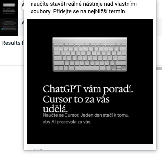
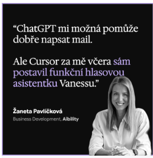
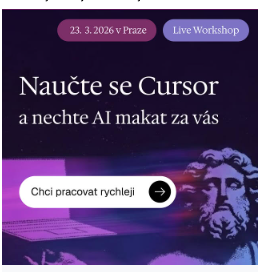
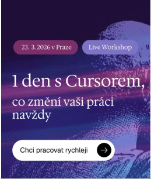
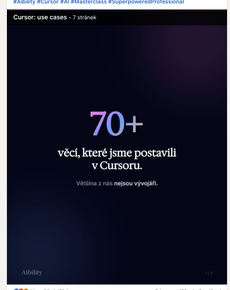
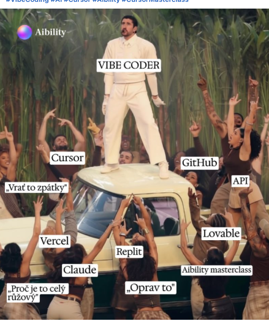
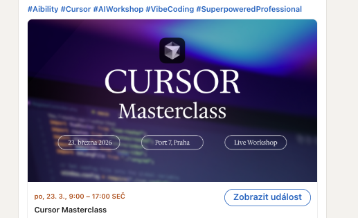
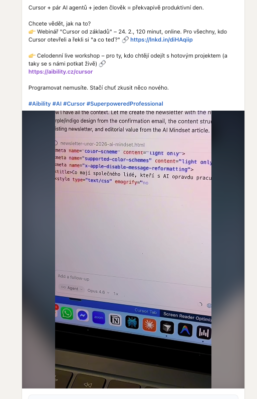

Cursor Masterclass 23. 3. 2026
~134 290 Kč
Celkové náklady
~47 475 Kč
Marketing spend
86 815 Kč
Event (prostor + catering)
Struktura nákladů
| Položka | Částka | Pozn. |
|---|---|---|
| Meta Ads | 24 815 Kč | |
| LinkedIn Ads (vč. video produkce) | ~15 460 Kč | boost postů + videa (~240 USD) |
| Google Ads (odhad podílu) | ~5 000 Kč | součást always-on kampaně |
| Tisk | 2 200 Kč | vč. DPH |
| Pronájem (Scott Weber) | 55 744 Kč | vč. DPH |
| Catering | 31 071 Kč | vč. DPH |
Rozložení
Paid media — ~45 275 Kč (34 %)
Tisk — 2 200 Kč (2 %)
Event — 86 815 Kč (64 %)
Insight: 65 % nákladů šlo do eventu samotného. Paid media tvoří méně než třetinu celkových nákladů.
Meta Ads
| Ad set | Spend | Impressions | Clicks | CPC | CPM |
|---|---|---|---|---|---|
| cursor_visual2 | ~3 668 Kč | 9 669 | 155 | ~23,7 Kč | ~379 Kč |
| Video Nej CPC + Konverze | ~3 451 Kč | 10 424 | 227 | ~15,2 Kč | ~331 Kč |
| cursor_visual34 (A) | ~1 319 Kč | 3 282 | 61 | ~21,6 Kč | ~402 Kč |
| cursor_visual34 (B) | ~636 Kč | 1 439 | 27 | ~23,5 Kč | ~442 Kč |
| cursor_visual34 (C) Nej CPM | ~8 632 Kč | 33 729 | 424 | ~20,4 Kč | ~256 Kč |
Winner formáty: Video = nejlepší CPC (~15,2 Kč) + konverze. Visual34 (C) = nejlepší CPM (~256 Kč) při největším objemu. Celkem 6 nákupů dle Meta reportu (videa + „1 den s Cursorem").
Top vizuály Meta
Kreativy s nejvíce impresemi. Celkem 6 nákupů dle Meta reportu — konvertovaly hlavně „1 den s Cursorem" a video formáty. Ostatní kreativy měly dobré prokliky, ale bez konverzí → LP potřebuje optimalizaci.

"ChatGPT vám poradí. Cursor to za vás udělá."

Žaneta testimonial (social proof)

"Naučte se Cursor" (purple gradient)

"1 den s Cursorem" (hlavní promo) Konverze
Hlavní závěr: Proklikovost celkově dobrá (1,65–1,86 % link CTR). „1 den s Cursorem" a videa konvertovaly (6 nákupů celkem), ostatní kreativy generovaly kliky bez konverze → LP stále potřebuje optimalizaci pro vyšší conversion rate.
LinkedIn — vybrané boostované posty

Cursor: use cases Winner

Vibe Coder meme

LinkedIn Event Nejdražší

Video promo (organický)
Klíčové závěry
- Carousel "use cases" = jednoznačný winner — nejvyšší objem, nejnižší cena (0,06 EUR), silné CTR.
- Meme vizuál — nejvyšší CTR (4,6 %), ale 3× dražší engagement.
- Event post — nejhorší performance. Event formát má nižší klikatelnost.
- Boost příspěvků na LinkedIn je překvapivě efektivní u content-first formátů.
- Video na Meta i LinkedIn: Konverze minimální (1 člověk), ale awareness value tam je. Příště kratší formáty s jasnějším CTA.
Owned kanály
Traffic přicházel i z follow-up emailů po webinářích, newsletterů (únor + březen) a dalšího mailingu (B2B promo). Velká část účastníků přišla z organických kanálů — emailing, komunita, word-of-mouth.
Slevové kódy
| Kód | Sleva | Využití | Poznámka |
|---|---|---|---|
| AI Edu kód | 10 % | 9 lidí | Jasná atribuce — AI Edu komunita |
| Obecný kód | 12 % | 15 lidí | Across všechny produkty — nelze přiřadit |
K CPL/CAC: Paid spend fungoval spíš jako amplifikátor organického dosahu než jako primární akviziční kanál. Čistý paid CPL proto není relevantní metrika pro tuto kampaň.
Web traffic (PostHog)
Orientační přehled návštěvnosti LP podle kanálů. Čísla jsou nižší než reálné konverze (cookie consent, adblocky, chybějící UTM), ale ukazují rozložení traffic zdrojů.
| Kanál | Visitors | Conversions | CR |
|---|---|---|---|
| Direct | 21 | 14 | 38,1 % |
| Organic Shopping | 13 | 10 | 46,2 % |
| Paid Search (Google) | 6 | 3 | 50,0 % |
| Organic Social | 5 | 2 | 40,0 % |
| 2 | 1 | 50,0 % | |
| Paid Social | 1 | 1 | 100 % |
| Referral | 5 | 0 | 0 % |
Pozor: PostHog čísla jsou výrazně nižší než reálné konverze z Meta/LI/emailingu — cookie consent, adblocky, rozdílné atribuční modely. Berte jako directional trend, ne absolutní čísla.
Takeaway: Lidé přicházeli z více kanálů — Direct, Google (organic i paid) a organic social tvoří dohromady silný podíl. Paid social v PostHogu zachytil minimum, protože většina konverzí se atribuuje přímo v Meta/LinkedIn.
Takeaway: Lidé přicházeli z více kanálů — Direct, Google (organic i paid) a organic social tvoří dohromady silný podíl. Paid social v PostHogu zachytil minimum, protože většina konverzí se atribuuje přímo v Meta/LinkedIn.
Co fungovalo
- Carousel formát na LinkedInu — dominantní performance; low-cost, high-click.
- Boost příspěvků na LinkedIn — překvapivě efektivní a levný kanál pro content-first formáty.
- Video kreativy na Metě — nejnižší CPC ze všech ad setů.
- AI Edu slevový kód — 9 lidí s jasnou atribucí = silný proof owned audience.
- Škálování jednoho ad setu (visual34 C) — nejlepší CPM při největším objemu.
- Meme/relatable obsah — vysoká klikatelnost, atraktivní pro cold audience.
- Proklikovost kreativ celkově — link CTR 1,65–1,86 % na Metě, 4,4–4,6 % na LinkedIn boostech.
Co nefungovalo / co zlepšit
- Landing page konverze — kreativy generují kliky, ale LP nekonvertuje. Hlavní bottleneck.
- LinkedIn event post — nejdražší engagement (0,52 EUR), nízké CTR (1,7 %).
- Smíšený intent v jednom postu (webinář + masterclass) → nelze čistě atribuovat.
- Malé ad sety na Metě (visual34 A/B) — vysoký CPM, nízký objem.
- Video na LinkedIn — minimální konverze (1 člověk), ale awareness value je tam.
Doporučení pro další launch
Co škálovat
- Carousel/use-case formát na LinkedIn jako primární paid kreativu.
- Video-first na Metě — pokračovat, testovat délky a hooky.
- Boost příspěvků na LinkedIn systematicky od začátku kampaně.
- Slevové kódy per kanál — AI Edu kód fungoval; příště i Meta, LI, NL kód.
Co změnit
- Landing page — hlavní priorita. Jasný hero, social proof, urgency, jednoduchý checkout, A/B test.
- Konsolidovat Meta ad sety — méně ad setů s větším budgetem.
- UTM na všechny touchpointy — reminder, onboarding, follow-up, Circle.
- Event post jen podpůrný — neboostovat jako primární performance kanál.
Co testovat příště
- Meme kreativy jako A/B — měřit nejen CTR, ale downstream konverze.
- Video na LinkedIn — kratší formáty s jasnějším CTA.
- Retargeting — kdo klikl, ale nekonvertoval → urgency / testimonial / limited seats.
Poučení z akce
Klikněte na pole a napište přímo. Vše se ukládá automaticky do prohlížeče.
Co se povedlo
Klikněte a pište